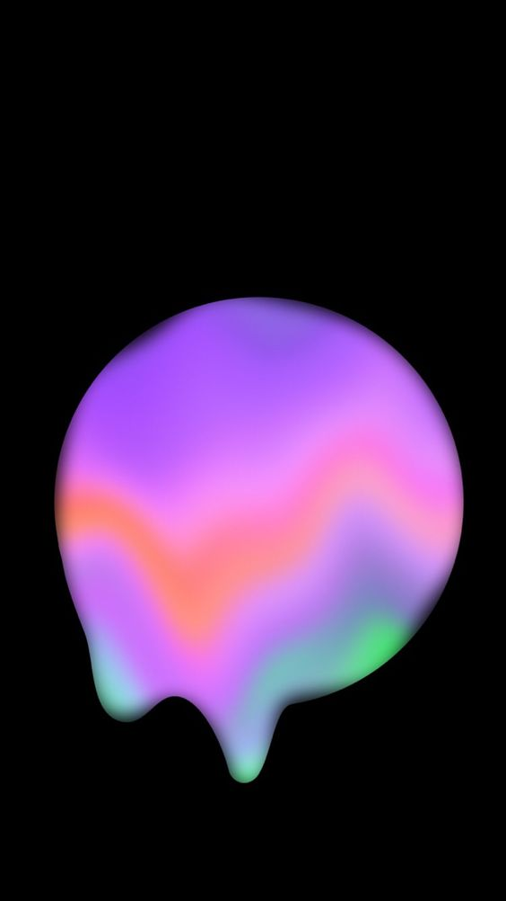
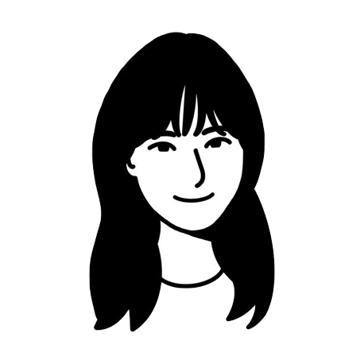
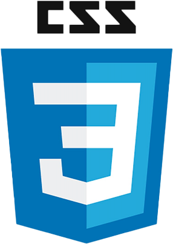

Home
About
Skills
Works
Contact


Park Garam's
Portfolio
About ME
저는 창의적이고 열정적인 웹 개발자입니다.
다양한 프로젝트를 통해 실력을 쌓아왔습니다.
Name: Park Garam
Age: 23 years old
School: Seoul Jeongsu Campus of
ﾠ ﾠ ﾠ ﾠ ﾠ ﾠ ﾠ Korea Polytechnic University
Skills

Works
Working on the above Miero Fiber page
Working on the above display page
Contact
Phone number: 000-1234-5678
Mail: 12345@naver.com